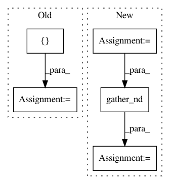

4887ef8baecbf5315ec0f235e56a4f93cd05aad7,cleverhans/attacks_tf.py,,spm,#Any#Any#Any#Any#Any#Any#Any#Any#Any#Any#Any#Any#Any#Any#,1947
Before Change
transforms = zip(sampled_dxs, sampled_dys, sampled_angles)
adv_xs = []
accs = []
// Perform the transformation
for (dx, dy, angle) in transforms:
adv_xs.append(_apply_transformation(x, dx, dy, angle, batch_size))
After Change
sampled_dys = np.random.choice(dys, n_samples)
sampled_angles = np.random.choice(angles, n_samples)
transforms = zip(sampled_dxs, sampled_dys, sampled_angles)
transformed_ims = parallel_apply_transformations(x, transforms, black_border_size)
def _compute_xent(x):
preds = model.get_logits(x)
return tf.nn.softmax_cross_entropy_with_logits_v2(
labels=y, logits=preds)
all_xents = tf.map_fn(
_compute_xent,
transformed_ims,
parallel_iterations=1) // Must be 1 to avoid keras race conditions
// Return the adv_x with worst accuracy
// all_xents is n_total_samples x batch_size (SB)
all_xents = tf.stack(all_xents) // SB
// We want the worst case sample, with the largest xent_loss
worst_sample_idx = tf.argmax(all_xents, axis=0) // B
batch_size = tf.shape(x)[0]
keys = tf.stack([
tf.range(batch_size, dtype=tf.int32),
tf.cast(worst_sample_idx, tf.int32)
], axis=1)
transformed_ims_bshwc = tf.einsum("sbhwc->bshwc", transformed_ims)
after_lookup = tf.gather_nd(transformed_ims_bshwc, keys) // BHWC
return after_lookup
In pattern: SUPERPATTERN
Frequency: 3
Non-data size: 5
Instances
Project Name: tensorflow/cleverhans
Commit Name: 4887ef8baecbf5315ec0f235e56a4f93cd05aad7
Time: 2018-10-04
Author: nottombrown@gmail.com
File Name: cleverhans/attacks_tf.py
Class Name:
Method Name: spm
Project Name: NifTK/NiftyNet
Commit Name: 6b48055fdfe3c628833ed26ca394ef2fb1d97f82
Time: 2017-10-26
Author: wenqi.li@ucl.ac.uk
File Name: niftynet/layer/resampler.py
Class Name: ResamplerLayer
Method Name: _resample_nearest
Project Name: NifTK/NiftyNet
Commit Name: 534c4dc7423681faab78d1829c1ec3c31ffb8330
Time: 2018-01-30
Author: wenqi.li@ucl.ac.uk
File Name: niftynet/layer/resampler.py
Class Name: ResamplerLayer
Method Name: _resample_inv_dst_weighting